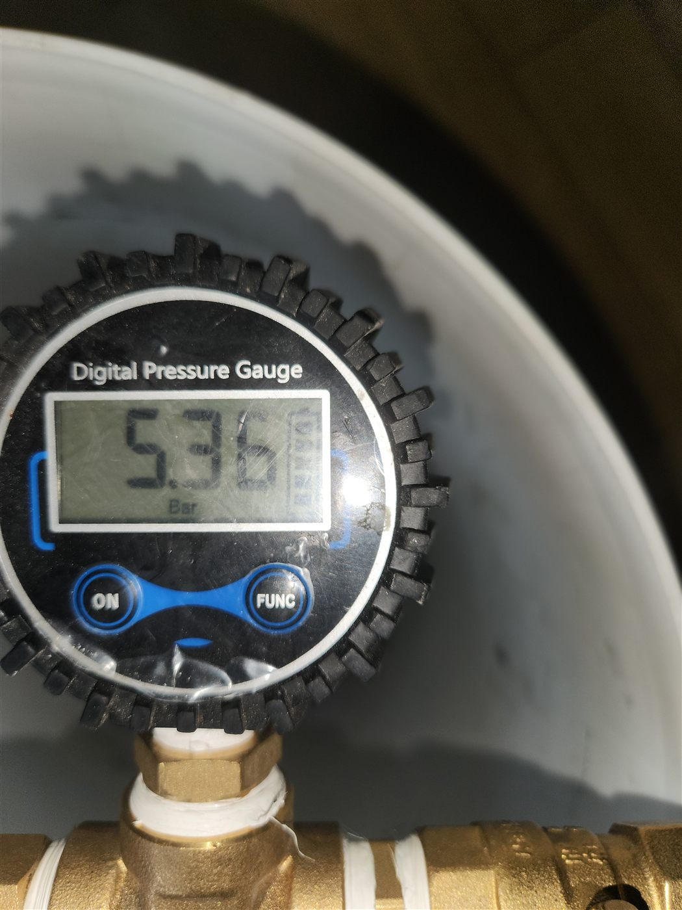
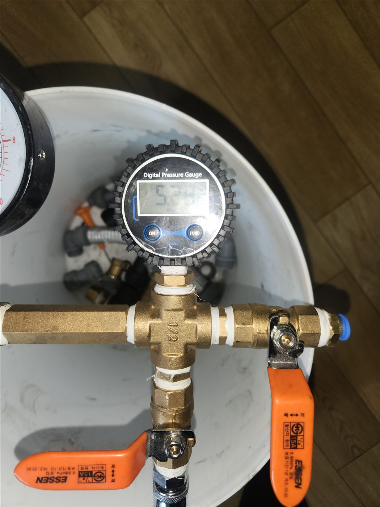
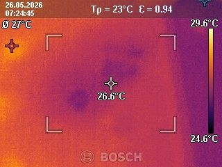
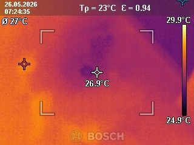
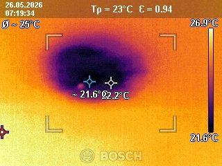

현장 상황
평택·안성·천안 일대 아파트에서 누수가 의심되어 공압검사와 실내 열화상검사를 함께 진행한 현장입니다. 벽지나 바닥에 뚜렷한 얼룩이 없으면 육안으로는 누수를 확인하기 어려워서, 구조물을 건드리지 않는 검사부터 시작했습니다.
공압검사
공압검사는 배관 안에 일정한 압력의 공기를 채운 뒤 압력이 유지되는지 보는 방법입니다. 새는 곳이 있으면 압력이 서서히 떨어집니다. 사진처럼 디지털 압력게이지로 수치를 확인하며 진행했습니다.



실내 열화상검사
누수가 있는 곳은 주변과 온도가 달라지는 경우가 많습니다. 열화상 카메라로 벽과 바닥을 촬영해 온도 분포가 다른 구간을 찾았습니다. 아래 사진에서 보라·파랑으로 보이는 부분이 주변보다 온도가 낮게 나타난 구간입니다.



공압검사와 열화상검사의 역할
공압검사는 배관에 누수가 있는지 여부를, 열화상검사는 대략적인 위치를 알려줍니다. 한 가지만으로는 오판할 수 있어서 두 결과가 같은 구간을 가리킬 때 개방 위치를 정합니다. 두 검사 모두 벽이나 바닥을 뜯지 않고 할 수 있어 거주 중인 아파트에서도 부담이 적습니다.
마무리
눈에 보이는 흔적 없이 수도 요금만 늘었다면 장비를 활용한 정밀 진단이 필요합니다. 공압검사로 누수 여부를 확인하고 열화상검사로 위치를 좁히면, 불필요하게 바닥이나 벽을 뜯지 않고도 작업 범위를 줄일 수 있습니다.
저희는 두 검사 결과가 같은 지점을 가리킬 때 개방 범위를 정합니다. 평택·안성·천안 아파트에서 원인 모를 누수가 의심되시면 정확한 검사부터 받아보세요.
접수 안내
비슷한 증상으로 문의하실 곳을 찾고 계신다면 전화로 접수해 주세요. 접수 건은 확인 후 신속하게 연결해 안내해 드리며, 현장 진단 후 견적에 동의하신 뒤에만 작업이 진행됩니다.